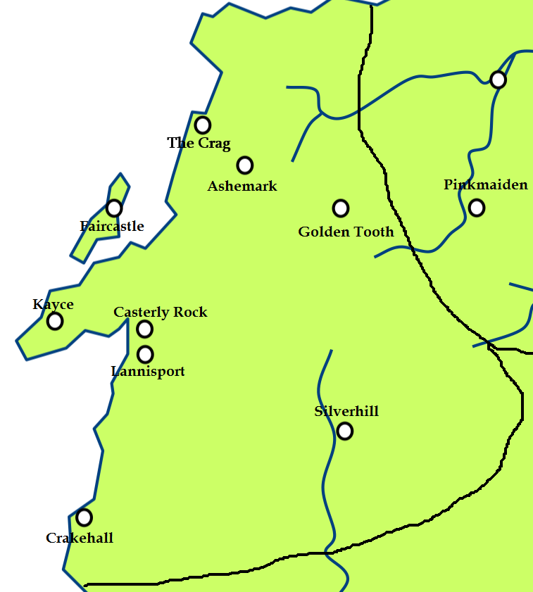
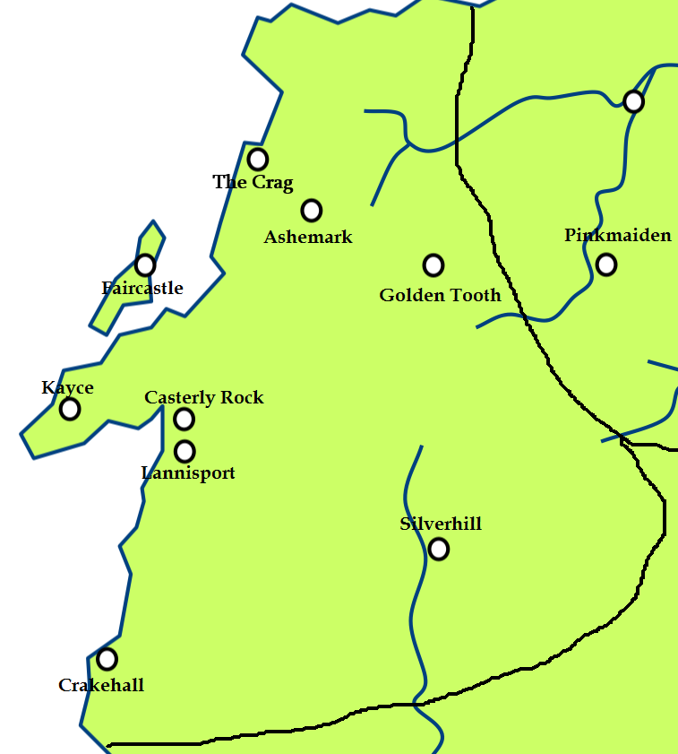

Kayce
Kayce is the seat of House Kenning of Kayce. It is situated in the Westerlands. It is located in a peninsula south of Fair Isle.
Map on Next page.

Kayce is the seat of House Kenning of Kayce. It is situated in the Westerlands. It is located in a peninsula south of Fair Isle.
Map on Next page.
